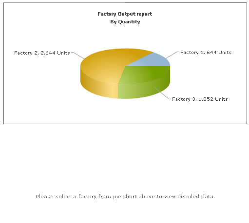

In our previous example, we had combined FusionCharts, Ruby and JavaScript to create client side dynamic charts. We were updating the chart by asking it to fetch new data from server and update itself, without incurring any page refreshes.
In this example, instead of asking the chart to get XML data from server, we'll provide updated XML data to chart using JavaScript functions. The chart will simply accept that XML data and render.
This method can effectively be used in your AJAX applications, where your JavaScript code gets the updated XML from server and then provides it to charts locally. You can process the data received from AJAX Calls, build XML from it and finally provide it to the chart.
Before you proceed with the contents in this page, we strictly recommend you to please go through the sections "How FusionCharts works?" and "Basic Examples", as we'll directly use a lot of concepts defined in those sections.
All code discussed here is present in
Controller : Download Package > Code > RoR > SampleApp > app > controllers > fusioncharts > db_js_controller.rb.
View : Download Package > Code > RoR > SampleApp > app > views > fusioncharts > db_js folder.
Defining the application
We'll carry on from our previous "Ruby, JavaScript and dataURL" example and convert it to use JavaScript + XML, so that the new XML is provided to the chart using JavaScript functions - the charts NO more directly request data from server. To attain this, we send all the pertinent data from our server to the end viewer as JavaScript arrays in the same page. The JavaScript arrays are dynamically generated by rjs template and filled with data.
Effectively, we will do the following:
- Contain both the pie chart (summary) and column chart (detailed) in one page (default).
- When the page loads, the pie chart would use dataStr method to show summary of all factories. This data will be built in default itself.
- There will be a JavaScript array named as data in this page. This array will contain detailed data for the factories. The array will be dynamically built by the controller and then outputted as JavaScript code.
- Apart from the data in JavaScript, we'll also have a local JavaScript function updateChart(), which would process the data in this array and convert it to XML data document, for direct usage by the column chart.
- The column chart would initialize with no data, as there is no factory selected initially. We'll customize the "No data to display" message of the chart to show a friendly message.
- The pie chart would have JavaScript links defined for each pie slice. This JavaScript links refer to updateChart() JavaScript function present on the same page. We'll later see how to hand code this function. When a pie is clicked, the factoryID is passed to this function.
- The updateChart() function is responsible for updating the column chart. It generates the XML data from data stored in JavaScript data array and conveys it to the column chart using the setChartData method.
- The column chart would now accept this XML data, parse it and finally render.
We will first take a look at the controller action default.
Creating the page containing the charts
Controller: Fusioncharts::DbJsController Action: default #This action retrieves the factory data # The corresponding view default.html.erb will be rendered. # In the view, rjs template (data.rjs) is rendered to dynamically #create a javascript array to hold the factory data. # This javascript array is used by the updateChart javascript function, to dynamically # update the second chart when clicked on a pie section in the first chart. def default response.content_type = Mime::HTML #Get data from factory_masters table @factories = Fusioncharts::FactoryMaster.find(:all) end
The code in the controller is the same. The changed portions have been highlighted above.
- Perform a find on the Model FactoryMaster selecting all the columns. Store this in a variable @factories.
- Iterate through the recordset obtained above and obtain the factory id and name. Also a variable index_count which starts with 0 is incremented in the beginning of this loop. This number is used as an index for this factory in the javascript array which we will create.
- For each factory, iterate through the factory_output_quantities and calculates the total quantity for this factory. Also, create a variable @js_var_string to which "data[" + index_count.to_s + "].push(new Array('" + formatted_date + "','"+quantity_number.to_s+"'));" is appended. This js_var_string when output to HTML, creates a code to construct the 2-dimensional javascript array data. data[0], say,will contain an array with date of production and quantity values for a particular factory. So on, for all other factories.
- Constructs a hash containing index_count, factory name and total output.
- Appends the hash to the array @factory_data.
This array @factories is used by the view to generate the first chart as shown below:
View: default.html.erb
<html>
<head>
<meta http-equiv="Content-Type" content="text/html; charset=utf-8" />
<TITLE>FusionCharts - Database + JavaScript Example</TITLE>
<%= stylesheet_link_tag "style" %>
<%= javascript_include_tag "jquery-1.4.2.min" %>
<%= javascript_include_tag "lib" %>
<%= javascript_include_tag "DD_belatedPNG_0.0.8a-min" %>
<!--[if IE 6]>
<script>
/* select the element name, css selector, background etc */
DD_belatedPNG.fix('img');
/* string argument can be any CSS selector */
</script>
<![endif]-->
<style type="text/css">
h2.headline {
font: normal 110%/137.5% "Trebuchet MS", Arial, Helvetica, sans-serif;
padding: 0;
margin: 25px 0 25px 0;
color: #7d7c8b;
text-align: center;
}
p.small {
font: normal 68.75%/150% Verdana, Geneva, sans-serif;
color: #919191;
padding: 0;
margin: 0 auto;
width: 664px;
text-align: center;
}
</style>
<%
#In this example, we show a combination of database + JavaScript rendering using FusionCharts.
#The entire example (page) can be summarized as under. This app shows the break-down
#of factory wise output generated. In a pie chart, we first show the sum of quantity
#generated by each factory. These pie slices, when clicked would show detailed date-wise
#output of that factory.
#The XML data for the pie chart is fully created in the controller at run-time. The controller interacts
#with the database and creates the XML for this.
#Now, for the column chart (date-wise output report), we do not submit request to the server.
#Instead we store the data for the factories in JavaScript arrays. These JavaScript
#arrays are rendered by our ruby Code (at run-time). We also have a few defined JavaScript
#functions which react to the click event of pie slice.
#Before the page is rendered, we need to connect to the database and get the
#data, as we'll need to convert this data into JavaScript variables.
#The JS Data and variables are dynamically rendered by the rjs template.
#Include the :defaults javascript, this is needed for the rjs template.
%>
<%= javascript_include_tag :defaults %>
<%= javascript_include_tag "FusionCharts" %>
<% #You need to include the above JS file, if you intend to embed the chart using JavaScript.
#Embedding using JavaScripts avoids the "Click to Activate..." issue in Internet Explorer
#When you make your own charts, make sure that the path to this JS file is correct.
#Else, you would get JavaScript errors.
%>
<script LANGUAGE="JavaScript">
<%
#Here, we use a mix of server side code (ruby) and JavaScript to
#render our data for factory chart in JavaScript variables. We'll later
#utilize this data to dynamically plot charts.
#All our data is stored in the data array. In the rjs template, we iterate through
#each resultset of data and then store it as nested arrays in this data array.
%>
var data = new Array();
<%
#Write the data as JavaScript variables here.
#For this we use the rjs template "fusioncharts/db_js/data"
#The data is now present as arrays in JavaScript. Local JavaScript functions
#can access it and make use of it. We'll see how to make use of it.
%>
<%= render :file=>"fusioncharts/db_js/data",:locals=>{:factories => @factories } %>
/*updateChart method is invoked when the user clicks on a pie slice.
In this method, we get the index of the factory, build the XML data
for that that factory, using data stored in data array, and finally
update the Column Chart.
@param factoryIndex Sequential Index of the factory.
@param factoryName For display purpose*/
function updateChart(factoryIndex,factoryName){
//Storage for XML data document
var strXML = "<chart palette='2' caption='Factory: " + factoryName + " Output '
subcaption='(In Units)' xAxisName='Date' showValues='1' labelStep='2' >";
//Add <set> elements
var i=0;
for (i=0; i<data[factoryIndex].length; i++){
strXML = strXML + "<set label='" + data[factoryIndex][i][0] + "' value='" + data[factoryIndex][i][1] + "' />";
}
//Closing Chart Element
strXML = strXML + "</chart>";
//Get reference to chart object using Dom ID "FactoryDetailed"
var chartObj = FusionCharts("FactoryDetailed");
//Update its XML
chartObj.setXMLData(strXML);
}
</script>
</head>
<body>
<div id="wrapper">
<div id="header">
<div class="back-to-home"><%= link_to 'Back to home', :controller=>'fusioncharts/index'%></div>
<div class="logo">
<a href="http://www.fusioncharts.com"><%= image_tag "fusionchartsv3.2-logo.png",
:width=>"131", :height=>"75", :alt=>"FusionCharts v3.2 logo" %></a>
</div>
<h1 class="brand-name">FusionCharts</h1>
<h1 class="logo-text">FusionCharts Database + JavaScript Example</h1>
</div>
<div class="content-area">
<div id="content-area-inner-main">
<h2 class="headline">Inter-connected charts - Click on any pie slice to see detailed
chart below.</h2>
<div class="gen-chart-render">
<%
# The xml is obtained as a string from builder template.
str_xml = render :file=>"fusioncharts/db_js/factories_quantity", :locals=>{:factories=>@factories}
#Create the chart - Pie 3D Chart with data from strXML
render_chart '/FusionCharts/Pie3D.swf', '', str_xml, 'FactorySum', 500, 250, false, false do-%>
<% end-%>
<BR>
<%
#Column 2D Chart with changed "No data to display" message
#We initialize the chart with <chart></chart>
#Register with Javascript - the last parameter should be set to true
render_chart '/FusionCharts/Column2D.swf?ChartNoDataText=Please select a factory from pie
chart above to view detailed data.', '', '<chart></chart>',
'FactoryDetailed', 600, 250, false, true do-%>
<% end-%>
</div>
<div class="clear"></div>
<p> </p>
<p class="small">The charts in this page have been dynamically generated using
data contained in a database. We've NOT hard-coded the data in JavaScript.
<p> </p>-->
</p>
<div class="underline-dull"></div>
</div>
</div>
<div id="footer">
<ul>
<li><%= link_to '« Back to list of examples', :controller=>'fusioncharts/index'%></li>
<li class="pipe">|</li>
<li><a href="/NoChart.html"><span>Unable to see the chart above?</span></a></li>
</ul>
</div>
</div>
</body>
</html>
In this page, we first render all the data in database as JavaScript array. To do so, we render the rjs template in the <SCRIPT> section of <HEAD> tag as shown.
var data = new Array();
<%= render :file=>"fusioncharts/db_js/data",:locals=>{:factories => @factories } %>
If you run this page and view the source JavaScript code, you'll see the following:
var data = new Array();
data[0] = new Array();
data[0].push(new Array('01/01','21'));
data[0].push(new Array('02/01','23'));
data[0].push(new Array('03/01','22'));
data[0].push(new Array('04/01','24'));
data[0].push(new Array('05/01','32'));
data[0].push(new Array('06/01','21'));
data[0].push(new Array('07/01','34'));
data[0].push(new Array('08/01','32'));
data[0].push(new Array('09/01','32'));
data[0].push(new Array('10/01','23'));
data[0].push(new Array('11/01','23'));
data[0].push(new Array('12/01','32'));
data[0].push(new Array('13/01','53'));
data[0].push(new Array('14/01','23'));
data[0].push(new Array('15/01','26'));
data[0].push(new Array('16/01','43'));
data[0].push(new Array('17/01','16'));
data[0].push(new Array('18/01','45'));
data[0].push(new Array('19/01','65'));
data[0].push(new Array('20/01','54'));
data[1] = new Array();
data[1].push(new Array('01/01','121'));
data[1].push(new Array('02/01','123'));
data[1].push(new Array('03/01','122'));
data[1].push(new Array('04/01','124'));
data[1].push(new Array('05/01','132'));
data[1].push(new Array('06/01','121'));
data[1].push(new Array('07/01','134'));
data[1].push(new Array('08/01','132'));
data[1].push(new Array('09/01','132'));
data[1].push(new Array('10/01','123'));
data[1].push(new Array('11/01','123'));
data[1].push(new Array('12/01','132'));
data[1].push(new Array('13/01','153'));
data[1].push(new Array('14/01','123'));
data[1].push(new Array('15/01','126'));
data[1].push(new Array('16/01','143'));
data[1].push(new Array('17/01','116'));
data[1].push(new Array('18/01','145'));
data[1].push(new Array('19/01','165'));
data[1].push(new Array('20/01','154'));
data[2] = new Array();
data[2].push(new Array('01/01','54'));
data[2].push(new Array('02/01','56'));
data[2].push(new Array('03/01','89'));
data[2].push(new Array('04/01','56'));
data[2].push(new Array('05/01','98'));
data[2].push(new Array('06/01','76'));
data[2].push(new Array('07/01','65'));
data[2].push(new Array('08/01','45'));
data[2].push(new Array('09/01','75'));
data[2].push(new Array('10/01','54'));
data[2].push(new Array('11/01','75'));
data[2].push(new Array('12/01','76'));
data[2].push(new Array('13/01','34'));
data[2].push(new Array('14/01','97'));
data[2].push(new Array('15/01','55'));
data[2].push(new Array('16/01','43'));
data[2].push(new Array('17/01','16'));
data[2].push(new Array('18/01','35'));
data[2].push(new Array('19/01','78'));
data[2].push(new Array('20/01','75'));
Now, before we get to the JavaScript functions, let's first see what we're doing in our code. The code which generates the above data arrays is in the rjs template (data.rjs):
#Create a javascript array, to contain the date of production
#and the factory output quantity.
index_count=-1
factories.each do |factory|
index_count = index_count + 1
page << "\t\t\t\tdata["+index_count.to_s+"] = new Array();"
factory.factory_output_quantities.each do |factory_output|
page << "\t\t\t\t data["+index_count.to_s+"].
push(new Array('"+ formatted_date(factory_output.date_pro)+ "','"+ factory_output.quantity.to_s+"'));"
end
end
In the body of the HTML, we have rendered two charts. The first chart uses the builder template factory_quantities.builder, passes the @factories parameter to it via locals. The resulting xml is passed to render_chart function to show a Pie3D chart.
The second chart is initialized with a customized message "Please select a factory from pie chart above to view detailed data.".
Let us take a look at the builder which actually does the work of creating a link to the detailed chart for each factory.
#Creates xml with values for factory output along with their names. It also creates #a link to javascript function updateChart #It uses the factories parameter from locals hash. #This data is used for building xml for chart with factory name and total output. xml = Builder::XmlMarkup.new index_count = -1 xml.chart(:caption=>'Factory Output report', :subCaption=>'By Quantity', :pieSliceDepth=>'30', :showBorder=>'1', :formatNumberScale=>'0', :numberSuffix=>'Units') do factories.each do |factory| # Note that the same index_count must be used in the javascript array index_count = index_count + 1 xml.set(:label=>factory.name,:value=>factory.total_quantity, :link=>'javaScript:updateChart('+index_count.to_s+ ',"'+factory.name+'");' ) end end
For each <set>, we provide a JavaScript link to the updateChart() function and pass the factory index and factory name to it.
Effectively, our page is now set to show two charts. The pie chart shows the summary data provided to it using dataXML method. The column chart shows the above "friendly" error message. Now, when each pie slice is clicked, the updateChart() JavaScript function is called and the index of the factory in the array and the factory name of the pie is passed to it. This function is responsible for updating the column chart and contains the following code:
function updateChart(factoryIndex,factoryName){
//Storage for XML data document
var strXML = "<chart palette='2' caption='Factory: " + factoryName + " Output '
subcaption='(In Units)' xAxisName='Date' showValues='1' labelStep='2' >";
//Add <set> elements
var i=0;
for (i=0; i<data[factoryIndex].length; i++){
strXML = strXML + "<set label='" + data[factoryIndex][i][0] + "' value='" + data[factoryIndex][i][1] + "' />";
}
//Closing Chart Element
strXML = strXML + "</chart>";
//Get reference to chart object using Dom ID "FactoryDetailed"
var chartObj = FusionCharts("FactoryDetailed");
//Update its XML
chartObj.setXMLData(strXML);
}
Here,
- We first create the XML data document for the column chart by iterating through data contained in our JavaScript data array, by using the index of the factory provided as parameter.
- Thereafter, we pass this XML data to the column chart. To do so, we first get a reference to the column chart using its DOM Id FactoryDetailed. We use the getChartFromId() function defined in FusionCharts.js to do so.
- Once we've the reference to the chart, we simply call the setXMLData method of the chart and pass it the XML data document.
- This updates the chart with new data.
When you now see the application, the initial state would look as under:

And when you click on a pie slice, the following would appear on the same page (without involving any browser refreshes):

This example demonstrated a very basic sample of the integration capabilities possible with FusionCharts v3.